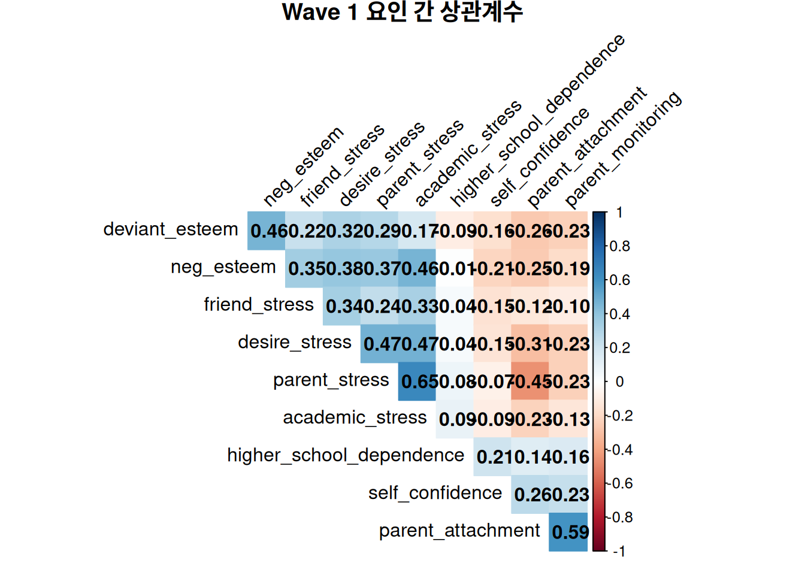
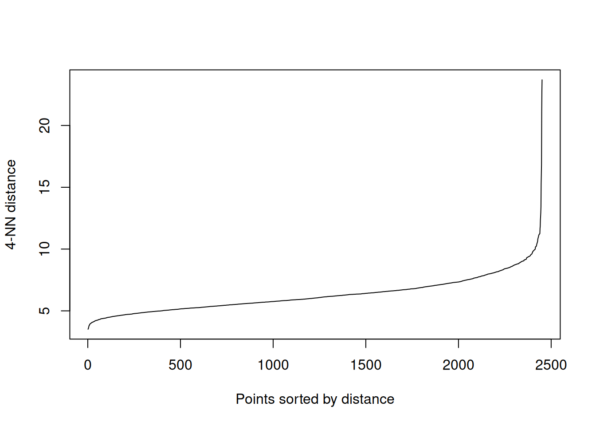
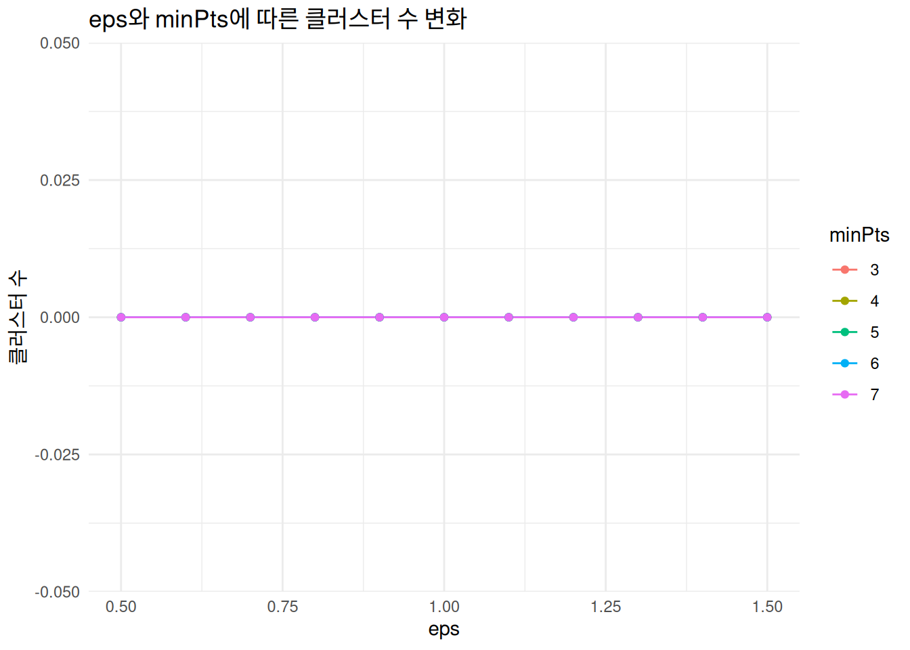
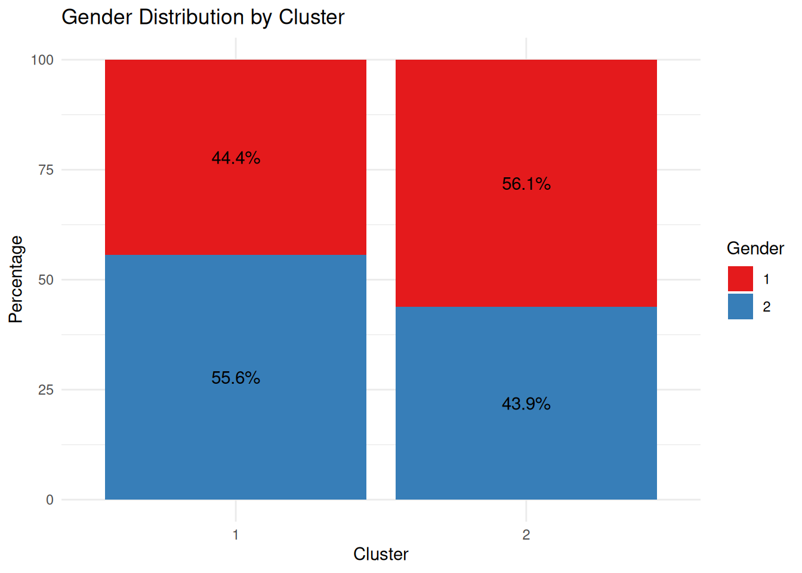

── Attaching core tidyverse packages ──────────────────────── tidyverse 2.0.0 ──
✔ dplyr 1.1.4 ✔ readr 2.1.5
✔ forcats 1.0.0 ✔ stringr 1.5.1
✔ ggplot2 3.5.1 ✔ tibble 3.2.1
✔ lubridate 1.9.3 ✔ tidyr 1.3.1
✔ purrr 1.0.2
── Conflicts ────────────────────────────────────────── tidyverse_conflicts() ──
✖ dplyr::filter() masks stats::filter()
✖ dplyr::lag() masks stats::lag()
ℹ Use the conflicted package (<http://conflicted.r-lib.org/>) to force all conflicts to become errors
# CSV 파일 읽기 (row.names=1은 첫 번째 열을 행 이름으로 사용)df_origin <-read.csv('_data/student_1.csv', row.names=1)# 원본 데이터 복사df <- df_origin# 필요한 열만 선택df <- df[, c('q48a01','q48a02','q48a03','q48a04','q48a05','q48a06','q48a07','q48a08','q48a09','q48a10','q48a11','q48a12','q48b1','q48b2','q48b3','q48c1','q48c2','q48c3','q48c4','q48c5','q48c6','q48c7','q48c8','q48c9','q48d1','q48d2','q48d3','q48d4','q48d5','q48d6','q49a01','q49a02','q49a03','q49a04','q49a05','q49a06','q49a07','q49a08','q49a09','q49a10','q49a11','q49a12','q49a13','q49a14','q49a15','q49a16','q49a17','q50')]
CFA (Confirmatory Factor Analysis)
library(lavaan)
This is lavaan 0.6-19
lavaan is FREE software! Please report any bugs.
library(semPlot)# 결측치 확인sum(is.na(df))
[1] 0
# 결측치가 있는 경우 처리 (필요 시)df_clean <-na.omit(df)# CFA 모델 지정# 13개의 잠재 요인을 정의 (위에서 지정한 요인 구조에 맞춰 설정)cfa_model <-' # 측정 모델 정의 # 자아존중감 관련 요인 pos_esteem =~ q48a01 + q48a02 + q48a03 neg_esteem =~ q48a04 + q48a05 + q48a06 deviant_esteem =~ q48a07 + q48a08 + q48a10 # 자기 신뢰감 관련 요인 self_confidence =~ q48b1 + q48b2 + q48b3 # 정서 관련 요인 aggression =~ q48c1 + q48c3 + q48c4 + q48c5 + q48c6 emotional_regulation =~ q48c7 + q48c8 + q48c9 # 성역할 정체감 요인 female_identity =~ q48d1 + q48d2 + q48d3 male_identity =~ q48d4 + q48d5 + q48d6 # 스트레스 관련 요인 parent_stress =~ q49a01 + q49a02 + q49a03 + q49a04 academic_stress =~ q49a05 + q49a06 + q49a07 + q49a08 friend_stress =~ q49a09 + q49a10 + q49a11 appearance_stress =~ q49a12 + q49a13 + q49a14 desire_stress =~ q49a15 + q49a16 + q49a17'# CFA 모델 실행cfa_fit <-cfa(cfa_model, data = df_clean)# 모델 적합도 지수 확인summary(cfa_fit, fit.measures =TRUE, standardized =TRUE)
# 시각화. 변수가 너무 많아서 잘 안보이긴 함semPaths(cfa_fit, what ="std", edge.label.cex =0.5, layout ="tree2", rotation =2, edge.color ="black", edge.width =0.5,label.cex =0.8, node.width =1.5, node.height =0.8,curvePivot =TRUE)

군집 분석
# 요인 점수 추출factor_scores <-lavPredict(cfa_fit)factor_scores_df <-as.data.frame(factor_scores)# 원본 데이터에서 필요한 변수 추출 (성별과 삶의 만족도)additional_vars <- df_origin[rownames(factor_scores_df), c("sex", "q50")]# 군집 분석을 위한 데이터셋 준비cluster_data <- factor_scores_df# 최적의 군집 수 결정 (엘보우 방법)library(factoextra)
Welcome! Want to learn more? See two factoextra-related books at https://goo.gl/ve3WBa
# WSS (Within-Cluster Sum of Squares) 계산wss <-fviz_nbclust(cluster_data, kmeans, method ="wss", k.max =10)
Warning: did not converge in 10 iterations
print(wss)

# 실루엣 방법으로 최적 군집 수 확인silhouette <-fviz_nbclust(cluster_data, kmeans, method ="silhouette", k.max =10)print(silhouette)

# 군집 수를 2개로 결정 (필요에 따라 조정)k <-2kmeans_result <-kmeans(cluster_data, centers = k, nstart =25)# 군집 할당 결과 추가cluster_data$cluster <-as.factor(kmeans_result$cluster)additional_vars$cluster <-as.factor(kmeans_result$cluster)# 군집별 특성 확인cluster_means <-aggregate(. ~ cluster, data = cluster_data, mean)print(cluster_means)
# 군집별 성별 분포 시각화library(ggplot2)# 성별과 군집에 따른 빈도 계산sex_cluster <-table(additional_vars$sex, additional_vars$cluster)sex_cluster_df <-as.data.frame(sex_cluster)names(sex_cluster_df) <-c("Sex", "Cluster", "Count")# 상대적 비율로 변환sex_cluster_df <- sex_cluster_df %>%group_by(Cluster) %>%mutate(Percentage = Count /sum(Count) *100)# 성별 분포 시각화. 1이 남성 2가 여성ggplot(sex_cluster_df, aes(x = Cluster, y = Percentage, fill = Sex)) +geom_bar(stat ="identity", position ="stack") +geom_text(aes(label =sprintf("%.1f%%", Percentage)), position =position_stack(vjust =0.5)) +labs(title ="Gender Distribution by Cluster",x ="Cluster", y ="Percentage", fill ="Gender") +theme_minimal() +scale_fill_brewer(palette ="Set1")

# 삶의 만족도(q50) 분포 시각화# q50의 분포를 확인table(additional_vars$q50)
1 2 3 4 5
54 421 1072 1626 276
# 군집별 삶의 만족도 평균 비교life_satisfaction <-aggregate(q50 ~ cluster, data = additional_vars, mean)print(life_satisfaction)
cluster q50
1 1 3.175390
2 2 3.807018
# 군집별 삶의 만족도 분포 시각화 (박스플롯)ggplot(additional_vars, aes(x = cluster, y = q50, fill = cluster)) +geom_boxplot() +labs(title ="Life Satisfaction Distribution by Cluster",x ="Cluster", y ="Life Satisfaction Score") +theme_minimal() +scale_fill_brewer(palette ="Set2")
# 군집별 삶의 만족도 분포 시각화 (바이올린 플롯)ggplot(additional_vars, aes(x = cluster, y = q50, fill = cluster)) +geom_violin(trim =FALSE) +geom_boxplot(width =0.1, fill ="white") +labs(title ="Life Satisfaction Distribution by Cluster",x ="Cluster", y ="Life Satisfaction Score") +theme_minimal() +scale_fill_brewer(palette ="Set2")
# 군집별 특성 요약cluster_summary <-data.frame(Cluster =1:k,Size =as.vector(table(cluster_data$cluster)),LifeSatisfaction = life_satisfaction$q50)# 군집별 요인 점수 평균 추가cluster_summary <-cbind(cluster_summary, cluster_means[, -which(names(cluster_means) =="cluster")])# 군집별 특성 출력print(cluster_summary)